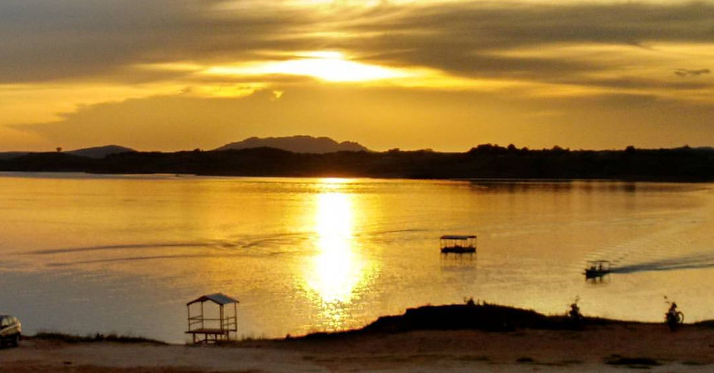

Geoinfos
Informações técnicas sobre relevo, população, IDH etc.
| INFORMAÇÕES | |
|---|---|
| Municípios limítrofes | Norte: Jaguaribe, Leste e Sul: Icó, Oeste: Iguatu e Quixelô |
| Fundação | 1 de janeiro de 1989 (32 anos) |
| Clima | semiárido |
| IDH | 0,636 — médio |
| PIB | R$ 3 892,95 |
| INFORMAÇÕES TERRITÓRIAIS | |
|---|---|
| Número de habitantes | 21 427 habitantes |
| Superfície de Orós |
57 627 hectares
576,27 km² (222,50 sq mi) |
| Densidade populacional | 37,2 ha./km² |
| Altitude de Orós | 153 metros de altitude |
| Coordenadas geográficas decimais |
Latitude:
-6.24261
Longitude: -38.903 |
| Coordenadas geográficas sexagesimais | Latitude: 6° 14' 33'' Sul , Longitude: 38° 54' 11'' Oeste |
| INFORMAÇÕES DO MUNICÍPIO | |
|---|---|
| Endereço da Prefeitura Municipal de Orós |
Orós
Prefeitura de Orós
Pça. Anastácio Maia, 40 ORÓS - CE, 63520-000 Brasil Work +55 88 3584-1188 Fax +55 88 3584-1450 |
| Telefone da prefeitura |
(88) 3584-1188
Internacional: +55 88 3584-1188 |
| Fax |
(88) 3584-1450
Internacional: +55 88 3584-1450 |
| Endereço electrónicoda prefeitura | Não disponível |
| Site oficial do município | oros.ce.gov.br |
| INFORMAÇÕES DO ADMINISTRATIVAS | ||
|---|---|---|
| Prefeito de Orós | JOSÉ RUBENS LIMA VERDE | |
| Partido politico | PSD | |
| INFORMAÇÕES DE TRANSPORTE | |
|---|---|
| Aeroporto |
Aeroporto Regional do Cariri
116 km
Aeroporto Dix-Sept Rosado
206.1 km
Aeroporto Internacional Pinto Martins
277.6 km
|
| INFORMAÇÕES DE DISTÂNCIA A OUTRAS CIDADES | ||
|---|---|---|
| São Paulo : 2097 km | Rio de Janeiro : 1911 km | Brasília : 1448 km |
| Salvador : 750 km | Fortaleza : 284 km mais perto | Belo Horizonte : 1607 km |
| Manaus : 2369 km | Curitiba : 2404 km | Recife : 488 km |
| Goiânia : 1619 km | Belém : 1192 km | Porto Alegre : 2946 km |
| Guarulhos : 2075 km | Campinas : 2051 km | São Luís : 728 km |
| Distância calculada em linha reta! | ||
História
Conheça mais sobre a história da ORÓS.
História
Onde hoje se ergue a nova cidade de Orós, até bem pouco não passava de simples propriedades destinadas à
criação e à agricultura rudimentar, praticada à base de enxada pelos colonos, sertanejos bravios acostumados à
luta difícil dos sertões tórridos do Ceará.
Desde de 1911 já se falava na existência do Boqueirão de Orós, garganta enorme por onde passam as águas do rio
Jaguaribe, que seria local propício para receber uma enorme barragem de represeamento.
Em 1921, com o início dos trabalhos de construção da represa, surgiram as primeiras residências, armazéns,
galpões, hospital, prédio para usina e uma pequena igreja. Em pouco tempo o comércio ganhou impulso,
ligando-se a capital do estado por uma rodovia.
Formação Administrativa:
Segundo o Decreto Estadual n.º 1.156, de 04-12-1933, o distrito de Orós figura no município de Icó.
Em divisão administrativa referente ao ano de 1933, o distrito de Orós figura no município de Icó.
Assim permanecendo em divisão territorial datada de1-VII-1955.
Elevado à categoria de município com a denominação de Orós, pela Lei Estadual n.º 3.338, de 15-09-1956,
desmembrado de Icó. Sede no antigo distrito de Orós. Constituído de 3 distritos: Orós, Guassusê e Igarói,
todos desmembrado de Icó. Instalado em 25-03-1959.
Em divisão territorial datada de 1-VII-1960, o município é constituído de 3 distritos: Orós, Guassusê e
Igarói.
Assim permanecendo em divisão territorial datada de 31-XII-1963.
Pela Lei Estadual n.º 7.168, de 14-01-1964, é criado o distrito de Palestina e anexado ao município de Orós.
Em divisão territorial datada de 31-XII-1968, o município é constituído de 4 distritos: Orós, Guassusê, Igarói
e Palestina.
Assim permanecendo em divisão territorial datada 1988.
Pela Lei Municipal n.º 3, de 18-06-1991, é criado o distrito de Santarém (ex-povoado) e anexado ao município
de Orós.
Em divisão territorial datada de 1995, o município é constituído de 5 distritos: Orós, Guassusê, Igarói,
Palestina e Santarém.
Assim permanecendo em divisão territorial datada 2007.
Fonte:
Orós (CE). Prefeitura.
Pontos Turísticos
Saiba mais sobre os melhores lugares e o que fazer em ORÓS.
_Nome_Ponto
_Nome_Ponto

_Nome_Ponto

Fontes:
font1
font2
font3
font4
font5
Como Chegar?
Veja como chegar nos melhores pontos de ORÓS